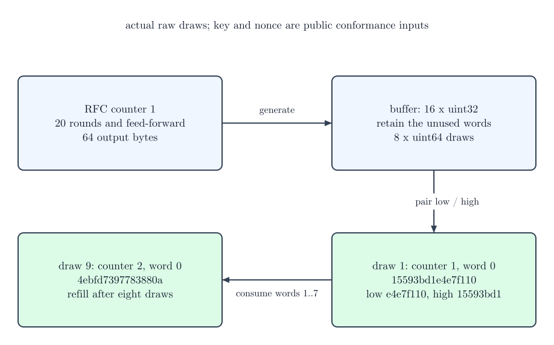
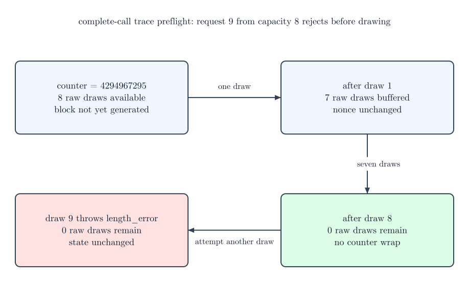

ChaCha20 as a Buffered Random Engine
Abstract
The random-engine interface turns ChaCha20's 64-byte blocks into successive 64-bit draws and common distribution samples. That wrapper needs a precise contract: how words are packed, which unused values stay buffered, how much capacity remains, and what happens at the final block counter. We inspect actual native draws, reproduce the original public-key example, and consume the final permitted block. The canonical engine now shares its rounds with the byte-oriented cipher and rejects exhaustion without changing its nonce. Seed expansion and copied engines provide reproducibility, with no added entropy or independence guarantee.
One published block becomes eight raw draws
ChaCha20 has sixteen 32-bit state words: constants, eight key words, a block counter and three nonce words. Twenty rounds and feed-forward produce sixteen output words. The engine returns pairs in little-endian order: the first word occupies the low half of a uint64 and the second occupies the high half. Eight calls consume a block. The ninth generates the next counter's block; it does not discard the first block's buffered tail after each call.
Use RFC 8439 Section 2.3.2. The first four key bytes 00 01 02 03 are the word 03020100, not 00010203. The public nonce's first four bytes 00 00 00 09 become 09000000. Word-valued constructor arguments therefore work identically on either host byte order. No pointer reinterpretation is needed.
#include <dm/dm.hpp>
int main() {
std::filesystem::create_directories("build");
const std::array<std::uint32_t,8> key{0x03020100,0x07060504,0x0b0a0908,0x0f0e0d0c,
0x13121110,0x17161514,0x1b1a1918,0x1f1e1d1c};
dm::random::ChaCha20 engine(key,{0x09000000,0x4a000000,0},1);
const auto draws=dm::random::chacha20_trace(engine,10);
std::array<std::uint8_t,32> bytes{};std::iota(bytes.begin(),bytes.end(),std::uint8_t{0});
const auto block=dm::algorithms::chacha20_block_trace(bytes,1,{0,0,0,9,0,0,0,0x4a,0,0,0,0});
bool matched=true;
for(std::size_t i=0;i<8;++i) {
const auto expected=std::uint64_t(block.feed_forward[2*i])|(std::uint64_t(block.feed_forward[2*i+1])<<32);
matched=matched && draws[i].value==expected;
}
if(!matched || draws[8].counter!=2 || draws[8].word_index!=0) return 1;
std::print("| draw | block counter | uint64 index | value (hex) | raw draws before |\n| ---: | ---: | ---: | :--- | ---: |\n");
for(std::size_t i=0;i<draws.size();++i) {
const auto& d=draws[i];
std::print("| {} | {} | {} | {:016x} | {} |\n",i+1,d.counter,d.word_index,d.value,d.remaining_before);
}
std::print("\nAll eight RFC block words match: {}. Remaining raw draws: {}.\n",matched,engine.remaining_u64());
dm::graphics::Diagram diagram(65,1100);
dm::graphics::DiagramNodeStyle node;node.width=5.2;node.height=2.4;node.font_size=18;
diagram.node("block",{0,0},"RFC counter 1\n20 rounds and feed-forward\n64 output bytes",node)
.node("buffer",{8,0},"buffer: 16 x uint32\nretain the unused words\n8 x uint64 draws",node);
node.fill={220,252,231};
diagram.node("first",{8,-4},std::format("draw 1: counter {}, word {}\n{:016x}\nlow e4e7f110, high 15593bd1",draws[0].counter,draws[0].word_index,draws[0].value),node)
.node("ninth",{0,-4},std::format("draw 9: counter {}, word {}\n{:016x}\nrefill after eight draws",draws[8].counter,draws[8].word_index,draws[8].value),node)
.edge("block","buffer","generate")
.edge("buffer","first","pair low / high")
.edge("first","ninth","consume words 1..7")
.text({4,2.5},"actual raw draws; key and nonce are public conformance inputs",18)
.save_svg("build/chacha20_engine_buffer.svg");
}| draw | block counter | uint64 index | value (hex) | raw draws before |
|---|---|---|---|---|
| 1 | 1 | 0 | 15593bd1e4e7f110 | 34359738360 |
| 2 | 1 | 1 | c47120a31fdd0f50 | 34359738359 |
| 3 | 1 | 2 | 0368c033c7f4d1c7 | 34359738358 |
| 4 | 1 | 3 | 4e6cd4c39aaa2204 | 34359738357 |
| 5 | 1 | 4 | 09aa9f07466482d2 | 34359738356 |
| 6 | 1 | 5 | a2028bd905d7c214 | 34359738355 |
| 7 | 1 | 6 | b94e16ded19c12b5 | 34359738354 |
| 8 | 1 | 7 | 4e3c50a2e883d0cb | 34359738353 |
| 9 | 2 | 0 | 4ebfd7397783880a | 34359738352 |
| 10 | 2 | 1 | d6b92beab0acccf8 | 34359738351 |
All eight RFC block words match: true. Remaining raw draws: 34359738350.

For block words w0 through w15, draw j is w(2j)+2^32*w(2j+1), for j=0 through 7. Its least-significant eight bytes are the original next eight keystream bytes. The displayed first value 15593bd1e4e7f110 therefore corresponds to RFC bytes 10 f1 e7 e4 d1 3b 59 15. Reformatting a numeric uint64 in hexadecimal is not the same as printing the bytes in stream order. The companion [cipher analysis](../../algorithms/cryptography/chacha20_analysis.html) checks the full published byte vectors and actual internal round states.
Preserve the original example and account for sampler consumption
The original example uses a deliberately public eight-word key, nonce [7,0,0] and starting counter zero. Keep that sequence exactly: a raw draw, then uniform01(), then an inclusive bounded integer. Each sampler advances the same raw stream; they are not three separate experiments from its beginning. The original stored bounded result was stale: the current common sampler uses high-product rejection and returns 6 here. The raw value and six-place uniform value remain unchanged; this conversion does not alter the shared sampler.
#include <dm/dm.hpp>
int main() {
const std::array<std::uint32_t,8> key{0x11111111,0x22222222,0x33333333,0x44444444,
0x55555555,0x66666666,0x77777777,0x88888888};
dm::random::ChaCha20 engine(key,{7,0,0});
const auto before=engine.remaining_u64();
const auto raw=engine.next_u64();const auto after_raw=engine.remaining_u64();
const auto uniform=engine.uniform01();const auto after_uniform=engine.remaining_u64();
const auto bounded=engine.uniform_u64(1,6);const auto after_bounded=engine.remaining_u64();
if(raw!=6902715600735840086ULL || bounded!=6) return 1;
std::print("| call | value | raw words consumed |\n| :--- | ---: | ---: |\n");
std::print("| next_u64 | {} | {} |\n",raw,before-after_raw);
std::print("| uniform01 | {:.6f} | {} |\n",uniform,after_raw-after_uniform);
std::print("| uniform_u64(1,6) | {} | {} |\n",bounded,after_uniform-after_bounded);
std::print("\nRaw capacity left: {}.\n",after_bounded);
}| call | value | raw words consumed |
|---|---|---|
| next_u64 | 6902715600735840086 | 1 |
| uniform01 | 0.404146 | 1 |
| uniform_u64(1,6) | 6 | 1 |
Raw capacity left: 34359738365.
For a raw word X, uniform01() uses U=floor(X/211)/253. It returns one of 2^53 grid points in [0,1), consumes one word and never returns one. The bounded-integer sampler multiplies by the interval size and rejects selected low products before returning the high half. Under uniform raw words, that avoids modulo bias. Rejection can consume several raw words; the displayed one-word use is specific to this call, not a universal bound. Other samplers can cache outputs: a cached normal draw can even survive raw stream exhaustion. Remaining capacity therefore counts next_u64() calls, not arbitrary distribution calls. Floating transformations depend on the platform's math implementation; exact raw integer replay has a stronger contract.
Stop at the fixed nonce's final block
A starting counter c allows B=232-c blocks and 8B raw uint64 draws. The default zero counter allows 235 draws, or 2^38 raw bytes. These are primitive stream limits, not the data limit of a separate authenticated ChaCha20-Poly1305 construction. A nonce is fixed for an engine's lifetime. The old carry from the wrapped counter into a nonce word is removed.
#include <dm/dm.hpp>
int main() {
std::filesystem::create_directories("build");
dm::random::ChaCha20 engine(std::array<std::uint32_t,8>{},{},0xffffffffU);
const auto initial=engine.remaining_u64();
bool preflight=false;try {(void)dm::random::chacha20_trace(engine,9);}
catch(const std::length_error&) {preflight=true;}
const auto unchanged=engine.remaining_u64()==initial;
const auto first=dm::random::chacha20_trace(engine,1);
const auto after_first=engine.remaining_u64();
const auto tail=dm::random::chacha20_trace(engine,7);
bool exhausted=false;try {(void)engine.next_u64();}
catch(const std::length_error&) {exhausted=true;}
if(!preflight || !unchanged || !exhausted || engine.remaining_u64()!=0) return 1;
std::print("Nine-word trace rejected before mutation: {}. Capacity unchanged: {}.\n",preflight,unchanged);
std::print("\n| final block | first word index | last word index | consumed uint64s | remaining |\n| ---: | ---: | ---: | ---: | ---: |\n");
std::print("| {} | {} | {} | {} | {} |\n",first[0].counter,first[0].word_index,tail.back().word_index,first.size()+tail.size(),engine.remaining_u64());
std::print("\nNinth raw draw throws: {}. Empty trace at exhaustion has {} records.\n",exhausted,dm::random::chacha20_trace(engine,0).size());
dm::graphics::Diagram diagram(65,1100);
dm::graphics::DiagramNodeStyle node;node.width=5.2;node.height=2.2;node.font_size=18;
diagram.node("start",{0,0},std::format("counter = 4294967295\n{} raw draws available\nblock not yet generated",initial),node)
.node("tail",{8,0},std::format("after draw 1\n{} raw draws buffered\nnonce unchanged",after_first),node);
node.fill={220,252,231};
diagram.node("empty",{8,-4},"after draw 8\n0 raw draws remain\nno counter wrap",node);
node.fill={254,226,226};
diagram.node("error",{0,-4},"draw 9 throws length_error\n0 raw draws remain\nstate unchanged",node)
.edge("start","tail","one draw").edge("tail","empty","seven draws")
.edge("empty","error","attempt another draw")
.text({4,2.3},"complete-call trace preflight: request 9 from capacity 8 rejects before drawing",18)
.save_svg("build/chacha20_engine_limit.svg");
}Nine-word trace rejected before mutation: true. Capacity unchanged: true.
| final block | first word index | last word index | consumed uint64s | remaining |
|---|---|---|---|---|
| 4294967295 | 0 | 7 | 8 | 0 |
Ninth raw draw throws: true. Empty trace at exhaustion has 0 records.

After a refill, let N be the number of not-yet-generated blocks and let t be the number of buffered uint64 values. Then remaining_u64()=8N+t. Generating the final block sets N to zero but t to eight. This distinction prevents both premature rejection and accidental counter wrap. Trace inspection checks the entire requested count and reserves its records before drawing, so an over-capacity request yields no partial trace and leaves raw and cached state unchanged. Ordinary distribution calls have no such whole-call preflight: for example, a rejection sampler may consume its last word and then throw.
Seed expansion and copies reproduce streams
The one-integer constructor is for deterministic simulation. Four SplitMix64 outputs become eight low/high 32-bit key words, with nonce and counter zero. The new native seed-key helper exposes that existing packing without duplicating it in the report. Expansion does not increase entropy: at most 2^64 keys are reachable from a 64-bit seed, despite the 256-bit destination array.
#include <dm/dm.hpp>
int main() {
const auto zero=dm::random::chacha20_seed_key(0);
std::print("| SplitMix draw | low key word | high key word |\n| ---: | :--- | :--- |\n");
for(std::size_t i=0;i<4;++i) std::print("| {} | {:08x} | {:08x} |\n",i+1,zero[2*i],zero[2*i+1]);
dm::random::ChaCha20 seeded(42),explicit_key(dm::random::chacha20_seed_key(42));
bool same=true;for(int i=0;i<24;++i) same=same && seeded.next_u64()==explicit_key.next_u64();
(void)seeded.normal();auto copy=seeded;
const bool cached_same=seeded.normal()==copy.normal();
const auto a=dm::random::chacha20_trace(seeded,17),b=dm::random::chacha20_trace(copy,17);
bool copied_same=true;for(std::size_t i=0;i<a.size();++i)copied_same=copied_same && a[i].value==b[i].value;
if(!same || !cached_same || !copied_same) return 1;
std::print("\nSeed constructor equals explicit expanded key for 24 draws: {}.\n",same);
std::print("Copied normal cache matches: {}. Copied raw tail and following blocks match: {}.\n",cached_same,copied_same);
}| SplitMix draw | low key word | high key word |
|---|---|---|
| 1 | 7b1dcdaf | e220a839 |
| 2 | a1b965f4 | 6e789e6a |
| 3 | 8009454f | 06c45d18 |
| 4 | 724c81ec | f88bb8a8 |
Seed constructor equals explicit expanded key for 24 draws: true. Copied normal cache matches: true. Copied raw tail and following blocks match: true.
Copying preserves the partial raw block and inherited normal cache. It duplicates the stream at that point; it does not create independent random streams. This wrapper does not acquire operating-system entropy, enforce nonce uniqueness, authenticate data, erase keys, reseed after compromise or provide a cryptographic random-service lifecycle. The public keys here establish reproducibility and conformance only. No observational dataset is needed for those exact contracts.
The native tests compare 1,000 random key/nonce streams, including partial buffers and near-exhaustion counters, against a separate block oracle that implements diagonal rounds through row rotations. They check every recorded value, location and remaining count, all final-buffer tails, failed preflight, copied caches, 1,000 seed expansions and the recomputed sampler outputs. The existing cipher vectors and common-engine sampler tests remain regression checks. Shared rounds remove algorithm duplication; conformance tests and a short report are not a security proof or a machine-code timing audit.
References
- Y. Nir and A. Langley (2018). [RFC 8439: ChaCha20 and Poly1305 for IETF Protocols](https://www.rfc-editor.org/rfc/rfc8439.html). Sections 2.3–2.4 define the byte primitive; uint64 buffering and checked engine exhaustion are native wrapper behavior.
- S. Vigna. [SplitMix64 reference implementation](https://prng.di.unimi.it/splitmix64.c). The library's legacy seed constructor uses four outputs in low/high order.